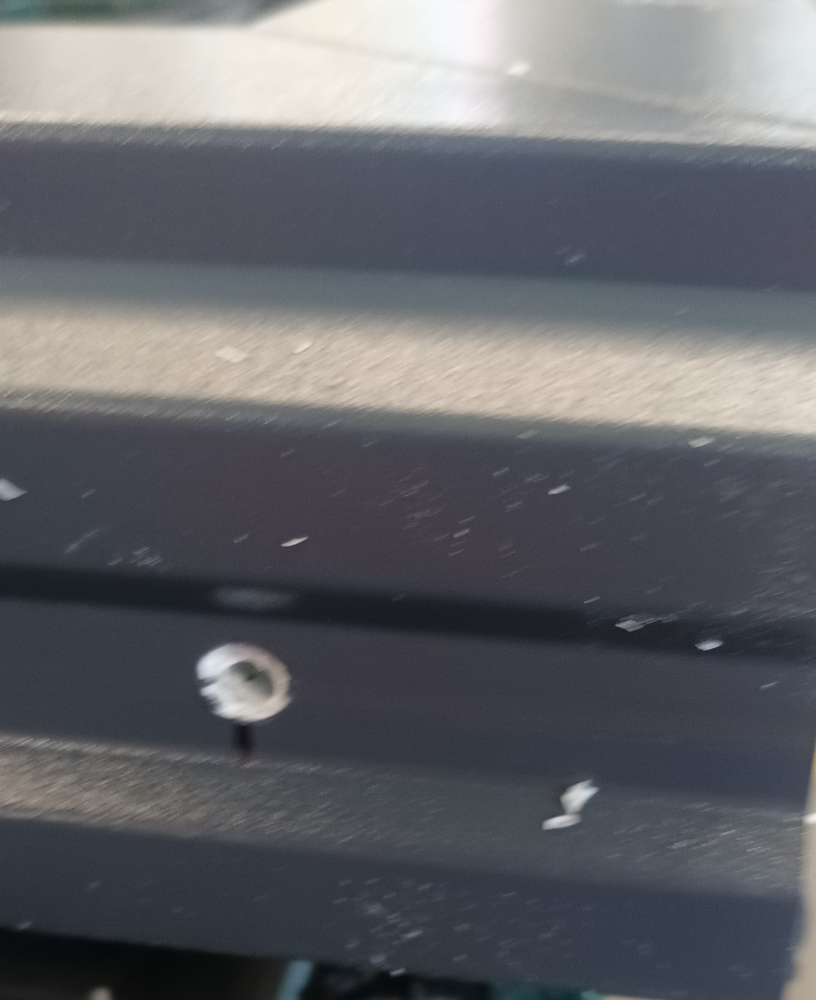

SALAMANDER
Labiryntowka krotsza na fix
Otbojnik - 16mm, 36mm
3 - SKRZYDLOWKA:
Jeden fix zwykly, drugi, ze strony zasuwnicy dajemy listwe dla zaczepow, krore przykrecaja na skladaniu.
Jeszcze nie robilem
4 - SKRZYDLOWKA:
Dwa fixy zwykle, jezdne aktywne zwykle.
W skrzydlie pasywnym dajemy listwe, ktora zakrywa zasywnice,
dol frezujemy.
Dlugosc listwy = wysokosc skrzydla - 5mm z gory.

Z dolu naklejamy gabeczki

z gory zrobic otwor, wlozyc wieszak miedzy skrydlo a listwe, otwor ma trafic w otwor wieszakowy
W zaznaczone otwory 3.5mm wedlug zasuwnicy przykrentic zaczepy
2 - JEZDNE:
Skrzydlo pasywne:
Z dolu gabka podobna do zwyklej, labiryntowka duzo krotsza,z gory plastik podobny jak w Decco
anoda inna z uszcelka i nakleic tasme klejace(3szt)
Jeszce nie robilem